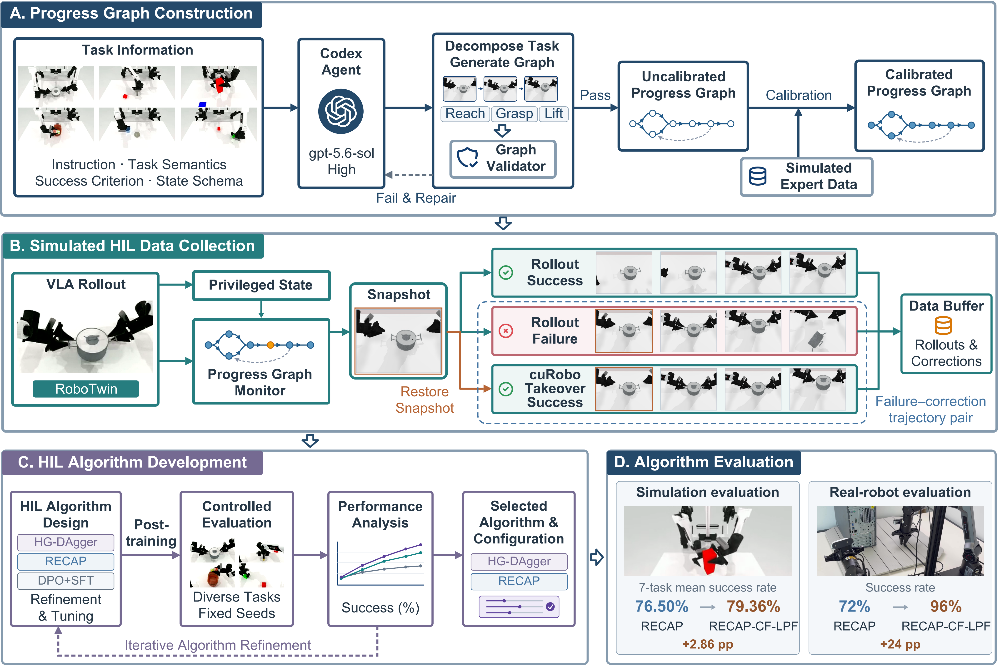
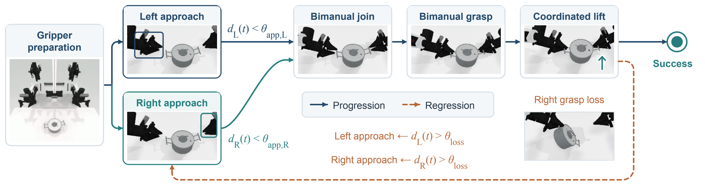
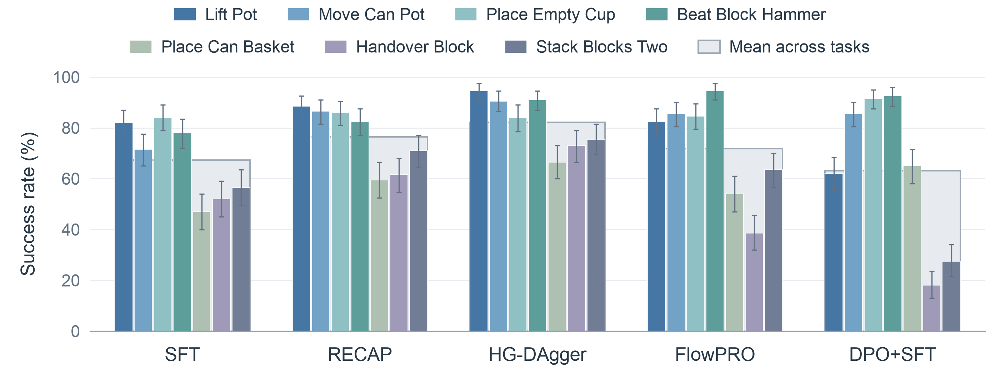
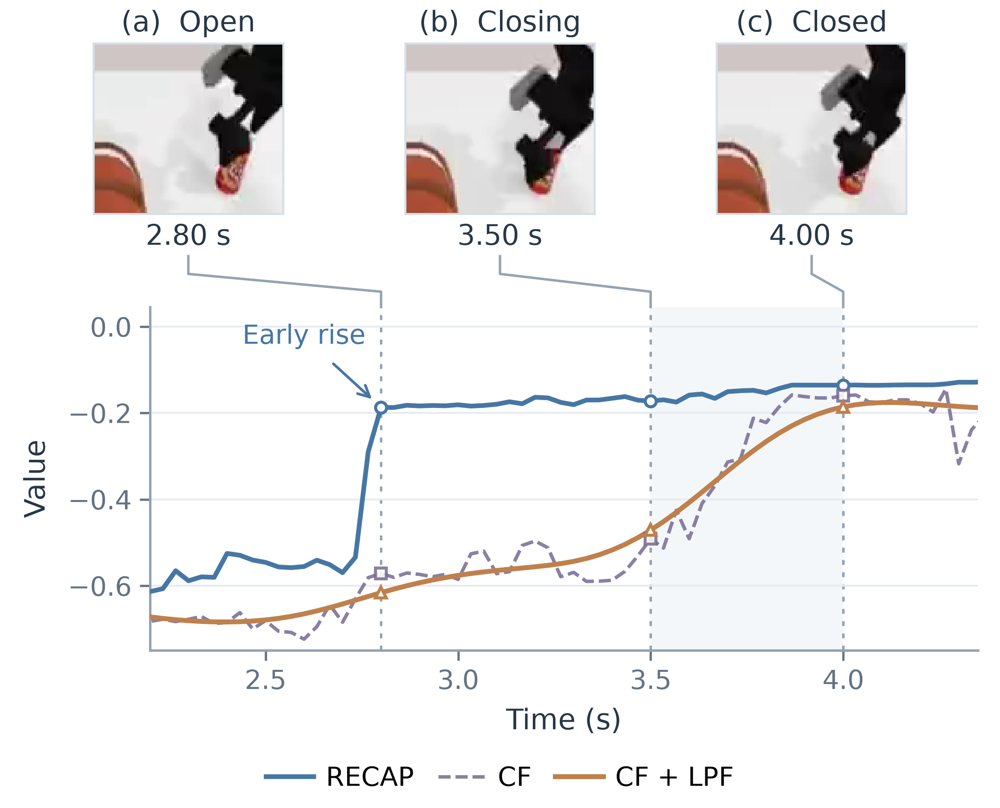
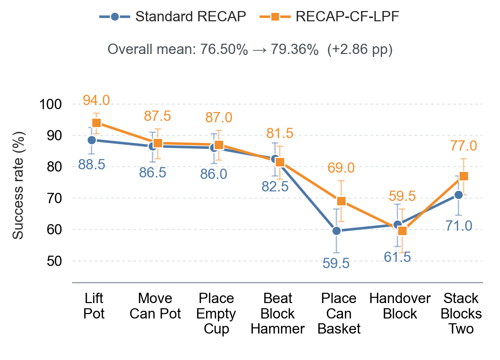

SimPT: An Automated Simulation Framework for Intervention-Based VLA Post-Training
ICRA 2027 · Anonymous Submission
Abstract
Human-in-the-loop (HIL) post-training improves vision–language–action (VLA) policies through expert corrections, but costly human supervision and repeated real-robot evaluation limit algorithm exploration and development. We introduce SimPT (Simulation-based Post-Training), a simulation framework that automates intervention-based VLA post-training by integrating policy rollouts, corrective data collection, policy training, and standalone evaluation. To automatically determine intervention timing and recovery strategies, we develop an Agent-Compiled Progress Graph that tracks task progress using privileged simulator state and retains stable snapshots during policy execution. After a rollout fails, a CuRobo-based expert attempts recovery from these snapshots, starting at more advanced task stages and falling back to earlier ones as needed to generate corrective trajectories. We implement and compare four post-training methods, RECAP, HG-DAgger, DPO+SFT, and FlowPRO, across seven RoboTwin manipulation tasks. Relative to a fixed-interval snapshot baseline, the Progress Graph reduces recovery attempts by 75.0% and increases recovery success from 93.4% to 98.9%. Using SimPT, we develop RECAP-CF-LPF, a refinement of RECAP that combines cross-fitting and low-pass filtering of value predictions. This refinement increases the overall success rate from 76.50% to 79.36% in held-out simulation trials. In real-robot HIL post-training, it increases the success rate from 72% to 96% across 25 scenarios of an Ethernet cable-insertion task. These results demonstrate the utility of SimPT for exploring and developing VLA post-training algorithms.
Framework overview
Collect corrective experience, compare algorithms, and evaluate the updated policy under controlled conditions.

Agent-Compiled Progress Graph

| Metric | Fixed interval | Progress Graph |
|---|---|---|
| Total recovery attempts ↓ | 3,781 | 945 (−75.0%) |
| Attempts per successful recovery ↓ | 7.62 | 1.79 |
| Recovery success ↑ | 93.4% | 98.9% |
Independent collections use the same parent policy, prescribed seeds, and recovery expert. Recovery success is measured over failed policy rollouts.
Simulation results
Four methods. Seven manipulation tasks. 1,400 held-out trials per method.

HG-DAgger achieves the highest mean success rate, 82.14%. RECAP reaches 76.50%, compared with 67.29% for the SFT parent. FlowPRO and DPO+SFT reach 71.86% and 63.14%, respectively.
Each method uses a fixed collection dataset and 10,000 training steps. Evaluation runs the updated VLA policy alone, without the Progress Graph, recovery expert, or privileged simulator state.
RECAP-CF-LPF
RECAP-CF-LPF combines five-fold cross-fitting with low-pass filtering to refine value predictions.


Results evaluate the combined CF-LPF refinement after one post-training iteration on fixed data.
Real-robot validation
Applying the simulation-developed refinement to human-in-the-loop Ethernet cable insertion.
From grasping to insertion
Two AgileX PiPER arms perform a bimanual manipulation task observed by one head camera and two wrist cameras.
Human experts collect demonstrations and interventions using master arms. Both variants train on the same 1,672 trajectories: 200 demonstrations, 802 intervention episodes, and 670 autonomous rollouts.
| Method | Successful scenarios | Success rate | Cumulative progress |
|---|---|---|---|
| RECAP | 18 / 25 | 72% | 59 / 75 |
| RECAP-CF-LPF | 24 / 25 | 96% | 72 / 75 |
Scenarios vary cable length, initial position, and chassis placement. Grasping, handover, and insertion each add one progress point; full insertion defines success.
Paper
BibTeX
Anonymous manuscript citation.
@misc{simpt2026,
title = {SimPT: An Automated Simulation Framework for
Intervention-Based VLA Post-Training},
author = {{Anonymous Authors}},
year = {2026},
note = {Anonymous submission to ICRA 2027}
}